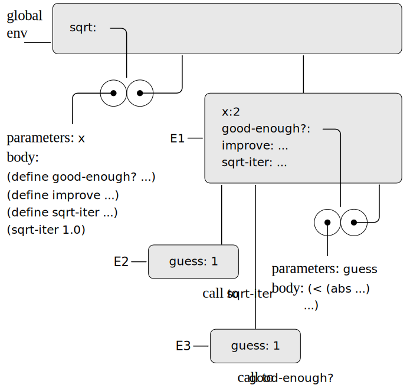
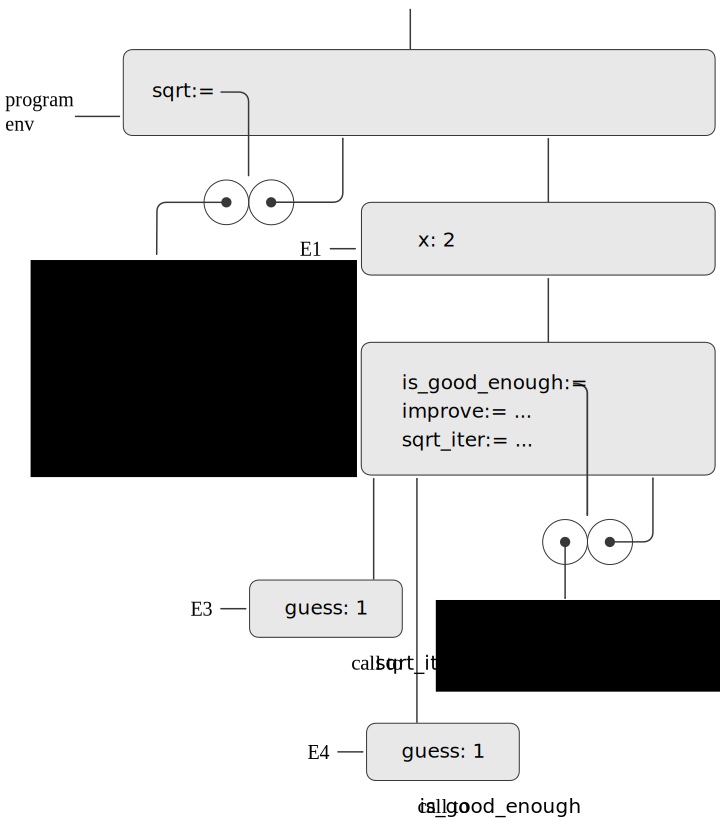

In this section we handle the evaluation of function bodies or other
blocks (such as the branches of conditional statements) that contain
declarations.
Each block opens a new scope for names declared in the block.
In order to evaluate a block in a given environment, we extend that
environment by a new frame that contains all names declared directly
(that is, outside of nested blocks) in the body of the block and
then evaluate the body in the newly constructed environment.
Section 1.1.8 introduced the idea that
proceduresfunctions
can have internal
definitions,
declarations,
thus leading to a block structure as in the
following
procedurefunction
to compute square roots:
function sqrt(x) {
function is_good_enough(guess) {
return abs(square(guess) - x) < 0.001;
}
function improve(guess) {
return average(guess, x / guess);
}
function sqrt_iter(guess){
return is_good_enough(guess)
? guess
: sqrt_iter(improve(guess));
}
return sqrt_iter(1);
}
Now we can use the environment model to see why these internal
definitions
declarations
behave as desired.
Figure 3.21
Figure 3.22
shows the point in the evaluation of the expression
(sqrt 2)sqrt(2)
where the internal
procedurefunctiongood-enough?is_good_enough
has been called for the first time with
guess equal to 1.
Original
JavaScript

Figure 3.21 sqrt procedure with internal
definitions.

Figure 3.22 The
sqrt function with internal
declarations.
Observe the structure of the environment.
Sqrt is a
symbol in the
global
environment that is bound
The name
sqrt is bound
in the program environment
to a
procedurefunction
object whose associated environment is the
globalprogram
environment. When sqrt was called, a new
environment, E1, was formed, subordinate to the
globalprogram
environment, in which the parameter x is bound
to 2. The body of sqrt was then
evaluated in E1.
Original
JavaScript
Since the first expression
in the body of sqrt is
That body is a block with local
function declarations and therefore E1 was extended with a new frame for
those declarations, resulting in the new environment E2. The body
of the block was then evaluated in E2. Since the first statement
in the body is
function is_good_enough(guess) {
return abs(square(guess) - x) < 0.001;
}
Original
JavaScript
evaluating this expression defined the procedure
good-enough?
in the environment E1.
evaluating this declaration created the function
is_good_enough
in the environment E2.
Original
JavaScript
To be more precise, the symbol
good-enough? was added to the first frame
of E1, bound to a procedure
object whose associated environment is E1.
To be more precise,
the name is_good_enough
in the first frame of E2 was bound to a function
object whose associated environment is E2.
Similarly,
improve and
sqrt-itersqrt_iter
were defined as
procedures in E1.functions in E2.
For conciseness,
figure 3.21
figure 3.22
shows only the
procedurefunction
object for
good-enough?.is_good_enough.
After the local
proceduresfunctions
were defined, the expression
(sqrt-iter 1.0)sqrt_iter(1)
was evaluated, still in environment
E1.E2.
So the
procedurefunction
object bound to
sqrt-iter
in E1 was called with 1 as an argument. This created an environment E2
in which
sqrt_iter
in E2 was called with 1 as an argument. This created an environment E3
in which
guess, the parameter of
sqrt-iter,sqrt_iter,
is bound to 1.
sqrt-iterThe function sqrt_iter
in turn called
good-enough?is_good_enough
with the value of guess
(from E2) as the argument for
good-enough?.
(from E3) as the argument for
is_good_enough.
This set up another environment,
E3, in which
guess (the parameter of
good-enough?)
E4, in which
guess (the parameter of
is_good_enough)
is bound to 1. Although
sqrt-itersqrt_iter
and
good-enough?is_good_enough
both have a parameter named guess, these are two
distinct local variables located in different frames.
Original
JavaScript
Also, E2 and E3 both have E1 as their enclosing environment, because the
sqrt-iter and
good-enough? procedures
both have E1 as their environment part.
Also, E3 and E4 both have E2 as their enclosing environment, because the
sqrt_iter
and
is_good_enough functions
both have E2 as their environment part.
One consequence of this is that the
symbol
name
x that appears in the body of
good-enough?is_good_enough
will reference the binding of x that appears in
E1, namely the value of x with which the
original sqrtprocedurefunction
was called.
The environment model thus explains the two key properties that make local
procedure definitionsfunction declarations
a useful technique for modularizing programs:
The names of the local
proceduresfunctions
do not interfere with
names external to the enclosing
procedure,function,
because the local
procedurefunction
names will be bound in the frame that the
procedure creates when it is run,block creates when it is evaluated,
rather than being bound in the
globalprogram
environment.
The local
proceduresfunctions
can access the arguments of the enclosing
procedure,function,
simply by using parameter names as free
variables.names.
This is
because the body of the local
procedurefunction
is evaluated in an environment that is subordinate to the
evaluation environment for the enclosing
procedure.function.
Exercise 3.11
In section 3.2.3 we saw how the
environment model described the behavior of
proceduresfunctions
with local state. Now we have seen how internal
definitions
declarations
work.
A typical message-passing
procedurefunction
contains both of these aspects. Consider the
bank account
procedurefunction
of section 3.1.1:
function make_account(balance) {
function withdraw(amount) {
if (balance >= amount) {
balance = balance - amount;
return balance;
} else {
return "Insufficient funds";
}
}
function deposit(amount) {
balance = balance + amount;
return balance;
}
function dispatch(m) {
return m === "withdraw"
? withdraw
: m === "deposit"
? deposit
: error(m, "Unknown request: make_account");
}
return dispatch;
}
Show the environment structure generated by the sequence of
interactions
Original
JavaScript
(define acc (make-account 50))
const acc = make_account(50);
Original
JavaScript
((acc 'deposit) 40)
90
acc("deposit")(40);
90
Original
JavaScript
((acc 'withdraw) 60)
30
acc("withdraw")(60);
30
Where is the local state for acc kept?
Suppose we define another account
Original
JavaScript
(define acc2 (make-account 100))
const acc2 = make_account(100);
How are the local states for the two accounts kept distinct? Which parts
of the environment structure are shared between
acc and acc2?
There is currently no solution available for this exercise. This textbook adaptation is a community effort. Do consider contributing by providing a solution for this exercise, using a Pull Request in Github.
More about blocks
As we saw, the scope of the names declared in
sqrt is the whole body of
sqrt. This explains why
mutual recursion works, as in this (quite
wasteful) way of checking whether a nonnegative
integer is even.
function f(x) {
function is_even(n) {
return n === 0
? true
: is_odd(n - 1);
}
function is_odd(n) {
return n === 0
? false
: is_even(n - 1);
}
return is_even(x);
}
At the time when
is_even is called during a call to
f, the environment diagram looks
like the one in figure 3.22 when
sqrt_iter is called. The functions
is_even and
is_odd are bound in E2 to function objects
that point to E2 as the environment in which to evaluate calls to those
functions. Thus
is_odd in the body of
is_even refers to the right function.
Although
is_odd
is defined after
is_even,
this is no different from how in the body of
sqrt_iter
the name
improve
and the name
sqrt_iter
itself refer to the right functions.
Equipped with a way to handle declarations within blocks, we can
revisit declarations of names at the top level. In
section 3.2.1, we saw
that the names declared at the top level are added to the program
frame. A better explanation is that the whole program is placed in
an implicit block, which is evaluated in the global environment.
The treatment of blocks described above then handles the top
level:
The global environment is extended by a frame that contains the
bindings of all names declared in the implicit block. That frame is
the program frame and the resulting
environment is the
program environment.
We said that a block's body is evaluated in an environment that
contains all names declared directly in the body of the block.
A locally declared name is put into the environment when the block is
entered, but without an associated value. The evaluation of its
declaration during evaluation of the block body then assigns to the
name the result of evaluating the expression to the right of the
=, as if the declaration were
an assignment. Since the addition of the name to the environment is
separate from the evaluation of the declaration, and the whole block
is in the scope of the name, an erroneous program could attempt to
access the value of a name before its declaration is evaluated;
the evaluation of an unassigned name signals an error.[1]
[1]
This explains why the program in
footnote 4 of chapter 1 goes wrong.
The time between creating the binding for a name and evaluating
the declaration of the name is called the
temporal dead zone (TDZ).